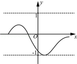
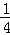
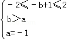
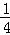

2014年北京市中考数学试题 · 数学解答题 第25题 · 对应解析
25．（8分）（2014•北京）对某一个函数给出如下定义：若存在实数M＞0，对于任意的函数值y，都满足﹣M＜y≤M，则称这个函数是有界函数，在所有满足条件的M中，其最小值称为这个函数的边界值．例如，如图中的函数是有界函数，其边界值是1．
（1）分别判断函数 y=（x＞0）和y=x+1（﹣4≤x≤2）是不是有界函数？若是有界函数，求其边界值；
（2）若函数y=﹣x+1（a≤x≤b，b＞a）的边界值是2，且这个函数的最大值也是2，求b的取值范围；
（3）将函数 y=x2（﹣1≤x≤m，m≥0）的图象向下平移m个单位，得到的函数的边界值是t，当m在什么范围时，满足≤t≤1？

考点： 二次函数综合题．菁优网版权所有
分析： （1）根据有界函数的定义和函数的边界值的定义进行答题；
（2）根据函数的增减性、边界值确定a=﹣1；然后由“函数的最大值也是2”来求b的取值范围；
（3）需要分类讨论：m＜1和m≥1两种情况．由函数解析式得到该函数图象过点（﹣1，1）、（0，0），根据平移的性质得到这两点平移后的坐标分别是（﹣1，1﹣m）、（0，﹣m）；最后由函数边界值的定义列出不等式≤1﹣m≤1或﹣1≤﹣m≤﹣，易求m取值范围：0≤m≤

或≤m≤1．解答： 解：（1）根据有界函数的定义知，函数y=（x＞0）不是有界函数．
y=x+1（﹣4≤x≤2）是有界函数．边界值为：2+1=3；
（2）∵函数y=﹣x+1的图象是y随x的增大而减小，
∴当x=a时，y=﹣a+1=2，则a=﹣1
当x=b时，y=﹣b+1．则

，∴﹣1＜b≤3；
（3）若m＞1，函数向下平移m个单位后，x=0时，函数值小于﹣1，此时函数的边界t≥1，与题意不符，故m≤1．
当x=﹣1时，y=1 即过点（﹣1，1）
当x=0时，y最小=0，即过点（0，0），
都向下平移m个单位，则
（﹣1，1﹣m）、（0，﹣m）
≤1﹣m≤1或﹣1≤﹣m≤﹣，
∴0≤m≤

或≤m≤1．点评： 本题考查了二次函数综合题型．掌握“有界函数”和“有界函数的边界值”的定义是解题的关键．